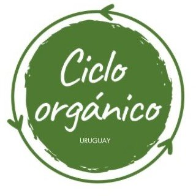

Gestión de residuos orgánicos
Soluciones de separación, recolección y valorización de restos vegetales, yerba, café y otros materiales compostables.

Ciclo Orgánico ConversemosGestión de residuos · Compostaje · Educación ambiental
Diseñamos soluciones simples y sostenibles para que hogares, empresas, instituciones educativas y comunidades puedan recuperar la materia orgánica y devolverla al suelo.
Nuestro propósito
Ciclo Orgánico es un emprendimiento uruguayo que acerca el compostaje y la gestión responsable de residuos a más personas e instituciones.
Combinamos gestión, educación y acompañamiento técnico para crear sistemas que se entienden, se incorporan a la rutina y pueden sostenerse en el tiempo.
Qué hacemos
El sistema se adapta al espacio, al tipo de residuos, a las personas involucradas y a los objetivos de cada organización.
Soluciones de separación, recolección y valorización de restos vegetales, yerba, café y otros materiales compostables.
Diseño, instalación y seguimiento de sistemas para hogares, empresas e instituciones, priorizando el compostaje en el lugar.
Talleres y jornadas sobre compostaje, separación, economía circular, suelo, huerta y hábitos ambientales.
Análisis de cada espacio y propuestas acordes al volumen de residuos, la infraestructura y las personas participantes.
Composteras y experiencias que unen gestión de residuos, aprendizaje práctico, huerta y participación.
Experiencias piloto, composteras comunitarias y acciones de sensibilización junto a organizaciones e instituciones.
Cómo trabajamos
No creemos en fórmulas idénticas. Conocemos cada espacio y construimos una propuesta práctica junto a quienes van a sostenerla.
Relevamos el lugar, los residuos, las rutinas y las posibilidades reales.
Definimos la combinación adecuada de separación, compostaje, recolección y capacitación.
Ponemos el sistema en marcha y acompañamos a las personas que participan.
Hacemos seguimiento, resolvemos dificultades y ajustamos el proceso.
Con quiénes trabajamos
Por qué compostar
“Cada residuo orgánico que recuperamos es una oportunidad para reducir, aprender y regenerar.”
Cuando la materia orgánica se separa correctamente, puede convertirse en compost: un material útil para mejorar el suelo y devolver nutrientes al ciclo natural.
Además de su beneficio ambiental, compostar permite ver y comprender de manera concreta cómo un residuo se transforma en recurso.
Compostamos juntos
Contanos sobre tu hogar, empresa, institución o comunidad. Podemos pensar una propuesta posible para tu realidad.
Paysandú · Salto · Uruguay